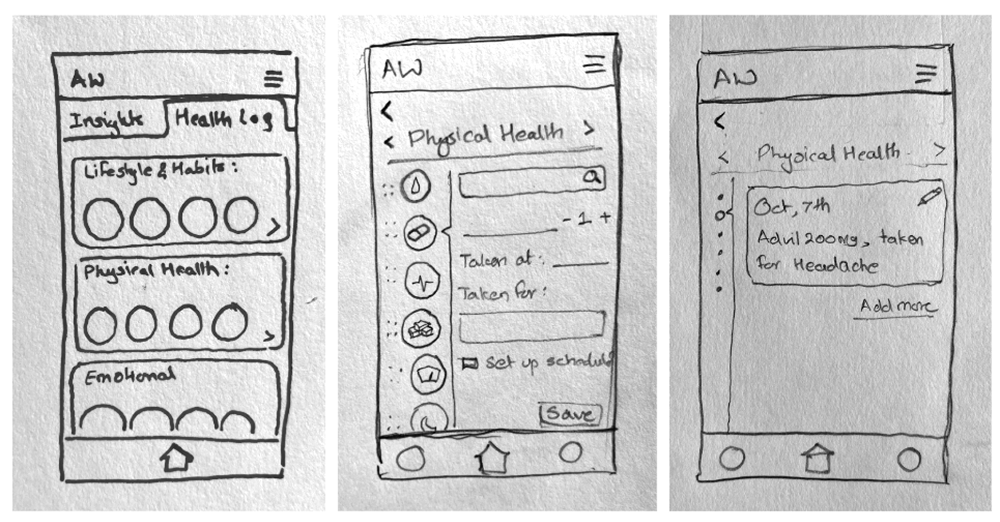

AssistWell
Migraine management is complex and requires tracking diverse health metrics like sleep, diet, and stress levels. Many apps fall short, overwhelming users with manual inputs and generalized solutions.
How might we enable meaningful and actionable insights by connecting migraines with preceding lifestyle metrics?
AssistWell combines a wearable sensor and a mobile app to track health metrics and provide AI-powered insights. It simplifies logging, delivers personalized health tips, and facilitates secure communication with healthcare professionals.
- AI voice assistant for effortless logging
- Real-time health alerts to prevent migraine triggers
- A video consultation portal for seamless doctor interactions

Track. Understand. Prevent.
A wearable sensor paired with an AI-powered mobile app — turning complex health data into clear, actionable migraine insights.
App Walkthrough

Explore the full prototype and design files below.
Above & Beyond
As part of my Web Design with HTML5 & CSS3 class at UC Berkeley Extension, I also developed a fully responsive website to showcase the AssistWell product. This allowed me to translate the UX and visual design into a working front-end prototype, reinforcing my understanding of structure, styling, and accessibility on the web.
Design Process
Understanding the Users
The process began by identifying and empathizing with our target audience — individuals seeking effective tools to manage migraines.
Personas
We developed detailed personas, such as Emily Harper, a busy professional struggling to identify and manage migraine triggers.
Context Scenarios
Real-life scenarios helped us envision how our users might interact with AssistWell, from onboarding with the sensor to accessing actionable health insights.
User Interviews
Insights from interviews revealed critical pain points, such as overwhelming manual tracking processes and unclear health correlations.
Outcome
This phase ensured we were addressing real user challenges and needs.
Defining Problems and Opportunity
To focus our efforts, we analyzed user behaviors and highlighted areas for improvement.
User Journey Mapping
We mapped the user's journey to identify friction points, such as difficulty logging data and understanding health insights.
Task Flows
Detailed task flows illustrated how users would pair the wearable device, log health metrics, and consult healthcare providers.
These tools allowed us to pinpoint opportunities for simplifying and streamlining the user experience.
Iterative Design and Testing
Stage 1: Initial Concept Testing & Wireframing
The process began with hand-drawn concept sketches for the product, which were tested.

Stage 2: Identifying Pain Points
Initial findings revealed that the home screen was overwhelming for most users. The combination of multiple options, numerous elements, and small font sizes led to confusion — especially during a migraine episode.


Stage 3: Streamlining the Experience
The screens were further refined to align with user needs. Iterations below showcase different design approaches created and tested with users to simplify screens and minimize usability issues.

Crafting the Final Experience
The visual design of AssistWell was built around clarity and calm. A restrained color palette, accessible typography, and consistent spacing were chosen to reduce cognitive load — especially important for users experiencing migraine symptoms.

Reflection
Designing AssistWell allowed me to apply user-centered design principles to a meaningful health challenge. From initial research to high-fidelity prototyping, each phase deepened my understanding of how design can support wellness through simplicity, clarity, and personalization.
While this is a hypothetical project, the process helped me grow as a designer — and affirmed my belief in the power of thoughtful UX to make everyday experiences better.
Impact & Value
AssistWell was designed with the goal of empowering individuals to better understand and manage their health through personalized, easy-to-use tracking tools.
Improved self-awareness of health patterns, triggers, and habits — especially for chronic conditions like migraines.
Earlier intervention and prevention, by helping users notice warning signs before symptoms worsen.
A sense of control and support, especially for those managing complex routines like medications, sleep, or nutrition.
A more holistic approach to wellness, where mental and physical health data are connected meaningfully. While this is a conceptual project, the design decisions were guided by real user needs and behaviors — with the hope that tools like AssistWell can bridge the gap between passive tracking and active health management.